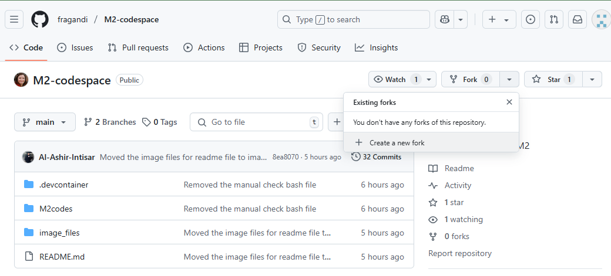
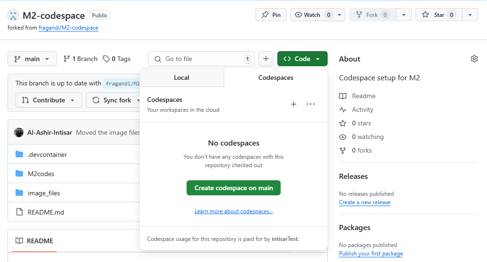
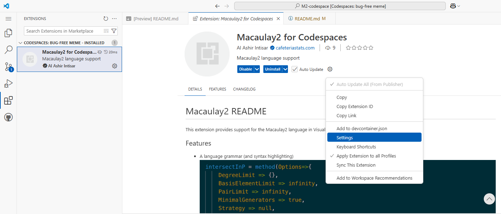
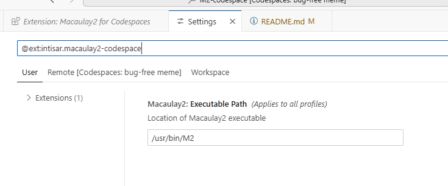

Chapter 1 Macaulay 2
This chapter is co-authored by Francesca Gandini, Sumner Strom, Al Ashir Intisar
Section 1.1 Creating a M2 Codespace
A turn-key repository for creating a Codespace for Macaulay2 is available at fragandi/M2-codespace. Below we provide detailed instructions. If you are familiar with GitHub Codespaces, you may be able to follow the instructions in the README directly. Otherwise, follow the steps below for a smoother setup.
Step 1: Fork the Repository: Navigate to fragandi/M2-codespace and click the Fork button in the top-right corner of the page.

Step 2: Create a Codespace: Open your forked repository, click the green Code button, and select Create codespace on main.

Step 3: Reload VS Code: Once the Codespace starts, open the Command Palette (Ctrl+Shift+P or Cmd+Shift+P), then type:
Reload Window
Step 4: Check Macaulay2 Executable Path: If you receive an error like “Cannot find Macaulay2 executable,” open the extension settings for Macaulay2 for Codespace and verify the executable path.


Fix: Open the Command Palette and disable VS Code Settings Sync:
Settings Sync: Turn Off
Then reload the window again as in Step 3. If problems persist, you may delete and recreate the Codespace.
Step 5: Verify Installation: To confirm Macaulay2 installed correctly, open the Command Palette again and run:
Codespaces: View Creation Log
Look for confirmation lines like:
✅ Macaulay2 installed successfully!
✅ Following all these steps ensures that Macaulay2 is ready to use inside your Codespace and only the correct environment settings are applied.
Alternative: If you want to create your own repository with Macaulay2 support from scratch, copy the .devcontainer/ directory and optionally the M2codes/, image_files/, and README.md from the original repo. Push to GitHub and launch your own Codespace.
For more information on using Macaulay2, visit the official documentation.
Section 1.2 Basic M2 Commands
Section 1.2.1 Arithmetic, Strings, and Lists
Make sure you run the code cells sequentially since some functions defined in earlier cells are used in later cells. You can also chnage the code in the block to evaluate any valid Macaulay2 code.
This block introduces basic arithmetic operations in Macaulay2, including exponentiation.
Here we compute large factorials, demonstrate how multiple expressions are separated by semicolons, and how to access the previous output using `oo`.
Strings are created using double quotes, assigned to variables, and concatenated horizontally with `|` or vertically with `||`.
Lists are constructed with curly braces. Indexing starts at 0, and element-wise arithmetic works like vector math.
Section 1.2.2 Functions, Apply, and Loops
Functions are created using the arrow operator `->`. This block defines a cube function `f` and a two-variable multiplication function `g`.
The `apply` function maps a function over a list or range. We also demonstrate a `for` loop to print values and their cubes.
Section 1.2.3 Rings, Matrices, Ideals
This block defines a quotient ring and a free module over it. It also explores indexing of basis vectors and ring metadata using `describe`.
We define a homomorphism using a matrix and investigate its image, ideal, kernel, and related algebraic information like rank and Poincaré polynomial.
This segment combines kernel and cokernel into a subquotient module, and explores its generators, relations, and a simplified (pruned) form.
Section 1.2.4 Homological Algebra and Gröbner Bases
We compute a projective resolution of a module, verify that it is a complex, and examine its Betti table for structure.
We construct a generic matrix, compute its resolution, and build polynomial rings with indexed variables. We generate and analyze a Gröbner basis.